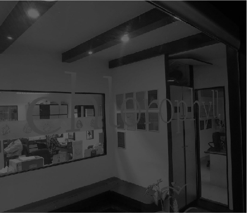

chlorophyll 3.0 to help businesses
"Mind the Gap"
Announces chlorophyll innovation lab, Meraki sports practice and new digital offerings
chlorophyll brand & communications consultancy is India’s last surviving independent brand consultancy, born in 1999.
chlorophyll has had the privilege of creating and transforming over 200 brands, including, for example Aptech, Ayush, BSE, CenturyPly, CG, CK Birla Group, FDC, Fortis, Ginger, Glenmark, India Today, Indigo Paints, Infosys, Mahindra, Meru, Mukand, Tata, The Lalit, Unilever and Zandu.
On August 14, 2018, chlorophyll revealed chlorophyll 3.0 at The Rooftop Rendezvous at Trident, Nariman Point.
chlorophyll 3.0 is chlorophyll’s shift from brand creation to brand creation and execution, helping its clients “Mind the Gap.”
Kiran Khalap, co-founder and Managing Director, said, “Social media has caused subterranean shifts in the concept of brands and branding. That is the first context. The second context is the gap between brand creation and execution. chlorophyll 3.0 is our answer to these two contexts of change.”
Over the past two years, chlorophyll has systematically invested in an innovation lab, in modelling a sports practice and in modelling digital services and social media services.
The chlorophyll innovation lab is headed by chlorophyll veteran, Chitresh Sinha, the sports practice is in partnership with Meraki. For digital, chlorophyll has Ashok Lalla as Digital Business Advisor and Principal Consultant.
chlorophyll innovation lab is India’s first brand innovations collective set up by chlorophyll.
It helps build brand relevance by:
1) Helping organisations create a culture of innovation and start-up thinking
2) Co-creating IP by collaborating with young innovators, early stage start- ups and the evolving maker-spaces across the globe.
3) Create disproportionate earned media for brands via innovation driven integrated brand engagement.
Chitresh Sinha, CEO, chlorophyll innovation lab said: “The key to innovation is that it needs to be created from the customer’s perspective and not from a technology or a domain perspective. That is why we have created a medium-agnostic model that merges evolving technologies, art and social impact to bring alive innovation for brands in integrated ways. The model is very different from the standard agency model. An ecosystem of 800+ innovators from across the globe set up fluid teams that create unique innovations"
The lab invented the world’s first Inspiration Medal for the Tata Mumbai Marathon in 2018.
The chlorophyll innovation lab displayed many of its innovations, with the star of the evening being HIC, a robot that can concoct 5000 cocktails and use AI to create relationships between people!
The sports practice has been created in partnership with Meraki Sport and Entertainment
( http://www.merakiconnect.com) .
The Meraki approach:
1) allows brands to effectively invest in sport,
2) helps sport teams, leagues, franchises and events define and align their brand thereby generating long term value,
3) helps global sport properties navigate through India.
Ajit Ravindran, Managing Director & Co-Founder, Meraki Sport and Entertainment, said: “Sport sponsorships in India have traditionally been one dimensional with logo visibility being the only parameter used in decision making. However, today sponsorships need to evolve into value partnerships that allow organisations to leverage sport to achieve multiple objectives. The chlorophyll sports practice will help brands, teams, leagues, events, athletes and federations leverage the power of sport and will work towards enhancing fan connect.”
chlorophyll also announced two new digital-driven, consumer-centred offerings that will help brands deliver better business impact.
The chlorophyll Digital Business Synthesiser is a time-bound, 5-step digital action model. It helps in creating ownable digital brand narratives to impact consumers and uplift business, through the use of proprietary models for research and branding, and its custom digital analytics tools.
The chlorophyll leadership branding offering helps turn business leaders into leadership brands in the digital age through a proprietary leadership branding model.
Ashok Lalla, Digital Business Advisor said: "I am excited to collaborate with chlorophyll, a firm I have long admired, to create these two exciting digital- driven offerings. These will help brands and business leaders use digital in a manner that will maximise their impact on consumers."
Read More